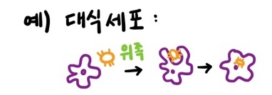
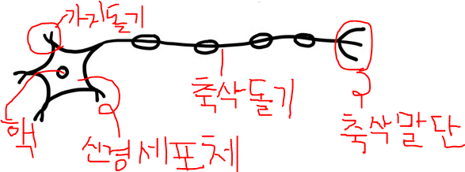

<doctype html>
  <html>
  <head>
    <meta charset="utf-8">
  </head>
  <body>
    <h2>생물</h2><br>
    생물의 구성요소 : 일반적으로 <strong>세포⇒조직⇒기관⇒개체</strong><br>
    <ul>
      <li>동물 - 세포⇒조직⇒기관⇒기관계⇒개체</li>
      <li>식물 - 세포⇒조직⇒조직계⇒기관⇒개체</li>
    </ul>
    <strong>동물의 세포</strong><br>
    -혈구세포(혈액을 구성하는 세포)
    <ul>
      <li>적혈구 - 산소운반</li>
      <li>백혈구 - 식균작용(식세포작용)<br>
        
      </li>
    </ul>
    -근육세포 : 다핵의 거대세포(핵이 많은 큰 세포)<br>
    <br>
    -신경세포 : 자극에 대한 반응<br>
    <br>
    -상피세포 : 피부를 구성하는 세포<br>
